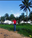

Afolabi Eniola Naomi | WDD 130

Hey there,my name is Afolabi Eniola Naomi and I'm from Lagos Nigeria.
I am currently learning Web development with BYU Pathway and I am super excited to
learn
new things grow as a developer.
Thanks